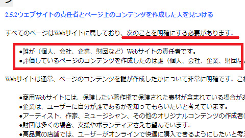

運営者情報の公開でSEO対策
最近のSEO対策の傾向として、専門性や権威性、信頼性が重要になってきたため、これを機に運営者情報を公開してみました。
結果として検索順位が上昇したのですが、あまり手間をかけずにSEO対策できるため、運営者情報は公開しておくことをおすすめします。
こちらのページにて、検索品質評価ガイドラインのPDFが公開されていますが、Googleはアルゴリズムを変更する際にテストをしており、その際に評価者がページの品質をチェックする際の指針や例がこのガイドラインにて提供されています。
この検索品質評価ガイドラインのPDFには英語版しかありませんが、PDFのサイズ容量を縮小した上でGoogle翻訳にアップロードすれば、日本語版を読むことができます。
このガイドラインには、運営者情報について以下のような記載があります。

■「2.5.2ウェブサイトの責任者とページ上のコンテンツを作成した人を見つける」
・誰が（個人、会社、企業、財団など）Webサイトの責任者か。
・ページのコンテンツを作成したのは誰か（個人、会社、企業、財団など）。■「4.3明確で満足のいくウェブサイト情報：責任者とカスタマーサービス」
Webサイトの責任者を理解することは、ほとんどの種類のWebサイトのEATを評価する上で重要な部分です。
■「6.6ウェブサイトまたはメインコンテンツの作成者に関する不十分な量の情報」
私たちはほとんどのWebサイトについて、何らかの形式のWebサイト情報を期待しています。匿名性の正当な理由がない限り、誰が（例：個人、会社、企業、財団など）メインコンテンツを作成したのかについての明確な情報を期待しています。
■「7.4.1ウェブサイトまたはメインコンテンツ作成者に関する不十分な情報」
誰がコンテンツを作成し、誰がコンテンツの責任者であるかについての情報を提供することは、ページにアクセスする人との信頼関係の構築に重要。
■「9.2評判とEAT：ウェブサイト、それともメインコンテンツの作成者？」
ページの品質評価を付けるには、Webサイトとメインコンテンツ作成者の両方の評判とEATを考慮する必要があります。
ざっと見てみますと、「サイト運営者」と「コンテンツ作成者」についての情報や評判が重要視されており、特にコンテンツの作成者は誰で、SNSなどの外部での評判や経歴はどうなのかについて重点を置いているように思います。
必ずしも「サイトの責任者」と「コンテンツ作成者」は一致しませんので、できればコンテンツ作成者についての情報を公開しておいた方がよいかもしれません。おそらくは、ニックネームでも可能と思います。
ただ、ぼくはネット上に個人名を晒すのは抵抗があったため、個人会社の法人名のみを公開することにしましたが、これだけでも多少のSEO効果があったと感じております。
この流れはDeNAのWELQ問題が発端かと思いますが、今後、大部分の匿名の個人ブログはネット上ではヒットしなくなるのかもしれません。
逆にいえば、運営者情報を公開すれば、上位表示しやすくなったともいえますので、可能な限りコンテンツを作成したのが誰なのかの情報を公開しておくことをおすすめします。